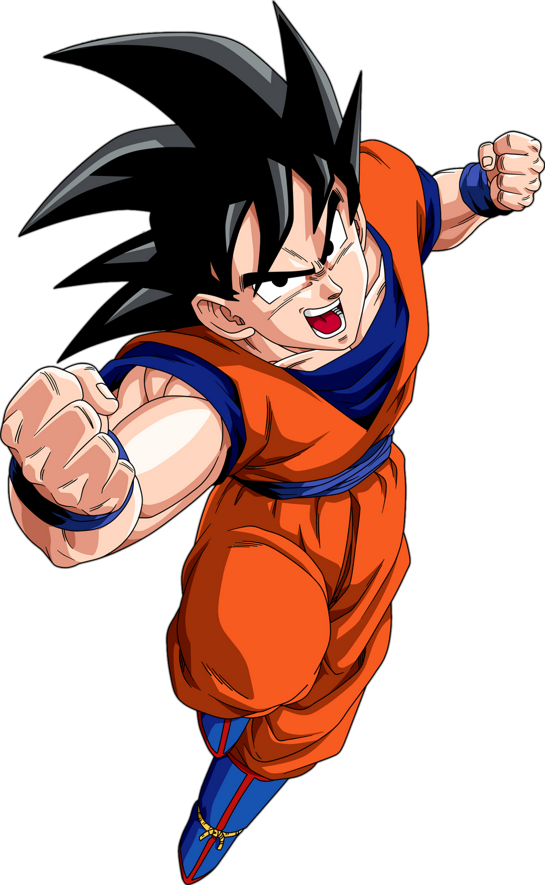
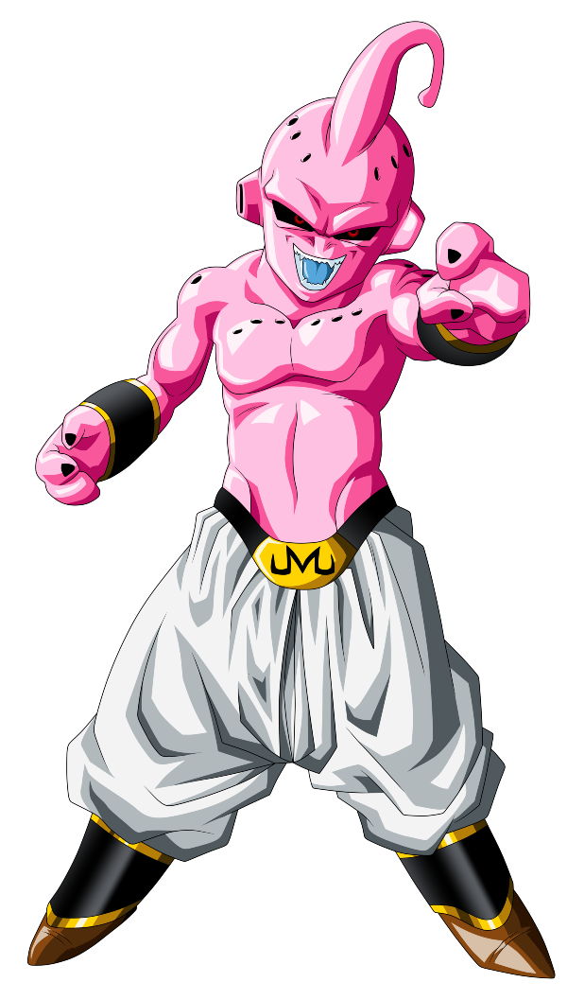
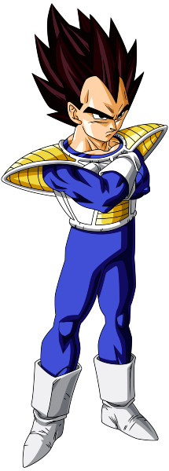

Cards
-
Goku
Descrição
Goku é membro de uma raça fictícia de extraterrestres, os Saiyajins. Logo após seu nascimento, Goku é enviado à Terra por seus pais Bardock e Gine para sobreviver à destruição do Planeta Vegeta, como revelado em Dragon Ball Super: Broly. Encontrado e criado pelo eremita Son Gohan, Goku passa a ter como objetivo se tornar mais forte, simplesmente pelo prazer da tarefa. Antes que a narrativa da série começasse, Goku, inconscientemente, mata Gohan em uma noite de lua cheia quando se transforma temporariamente no poderoso Ōzaru (大 猿), depois de olhar a lua cheia. No início da série, Goku conhece uma adolescente extremamente inteligente chamada Bulma e se junta a ela para encontrar as sete Dragon Balls, que, quando reunidas, convocam o desejo do dragão Shen Long. Durante sua jornada, Goku também conhece o ladrão Yamcha e duas criaturas transmorfas, Oolong e Pual, que se juntam à sua missão. Depois disso, Goku é treinado pelo Mestre Kame, conhecido por muitos anos como o maior lutador de artes marciais do mundo, ao lado de um menino que treinou num templo Shaolin chamado Kuririn, que se torna seu melhor amigo.
-
Kid Boo
Descrição
Também conhecido como Majin Boo (魔人ブウ, Majin Bū), é a forma original e forma mais pura do Majin chamado Boo. A primeira forma de Boo que aparece em Dragon Ball Z é na verdade a forma que ele teve quando absorveu o Supremo Senhor Kaioh do Sul e o Grande Supremo Senhor Kaioh milhões de anos atrás, e Kid Boo só apareceu de novo após todos os lutadores que ele absorveu foram removidos de seu sistema.
-
Vegeta
Descrição
Como o príncipe da raça praticamente extinta de guerreiros alienígenas, chamados Saiyajins. Vegeta foi um dos primeiros antagonistas da série, visando utilizar o poder das esferas para obter imortalidade e domínio sobre toda a galáxia. Após o surgimento de inimigos em comum, Vegeta se vê forçado a formar uma aliança com os protagonistas da série. Com o tempo, ele se torna um aliado fiel ao personagem principal da série, Goku. Vegeta é conhecido por seu poder inacreditavelmente forte, por seu comportamento arrogante e orgulhoso, e principalmente por sua rivalidade com Son Goku.